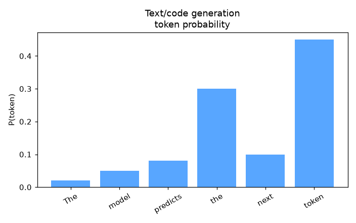

Text Generation — AI engineering example · part of the MLOps monorepo
This example is grounded in Text Generation. The equations below drive every forward and backward pass in the implementation.
Text generation models learn to predict the next token given past context. Temperature scaling controls randomness: high temperature yields creative but incoherent text; low temperature yields repetitive but safe text. Top-k and nucleus sampling truncate the probability mass to improve diversity.
Concrete forward-pass / update evaluation using the algorithm's own equations:

Interactive temperature slider; generated text preview; perplexity vs context length.
The example follows a consistent data → train → evaluate → serve pipeline. Inputs are loaded and validated, transformed by the core algorithm, scored against held-out data, and exposed through a REST API.
| Class | Public methods | Responsibility |
|---|---|---|
GenerateRequest | — | |
GenerateResponse | — | |
EvaluateRequest | — | |
EvaluateResponse | — | |
StatsResponse | — | |
TextTokenizer | __post_init__, encode, decode, batch_encode | |
MultiHeadAttention | __post_init__, init_weights, _split_heads, _combine_heads, forward, backward, update_params | |
AddNorm | init_params, forward, backward | |
FeedForward | init_weights, forward, backward, update_params | |
TransformerBlock | __post_init__, forward | |
BaseTextModel | _init, forward | |
SamplingStrategy | sample | |
TextGenerationModel | _init, fit, generate, evaluate, save, load, to_dict |
data.py reads the source dataset and splits train/test.model.py applies the mathematics from Section 1.api.py exposes prediction endpoints with drift detection.Key design choices in this module: a pure-NumPy implementation (no PyTorch/TensorFlow), schema validation via ai_core.validation, structured JSON logging through ai_core.logging, Prometheus metrics from ai_core.metrics, and MLflow/model-registry persistence via ai_core.model_registry. The FastAPI service wraps the trained model with observability middleware from ai_core.fastapi_middleware.
The most important behaviour is summarised below; full source for each module is collapsible so the page stays readable while remaining self-contained.
No docstring-annotated key methods.
"""Text Generation implementation from scratch using NumPy.
Architecture:
1. TextTokenizer: Tokenizes text into token IDs with vocabulary
2. TextGeneratorModel: Transformer-based autoregressive model
3. SamplingStrategy: Temperature, top-k, top-p sampling strategies
4. GenerationConfig: Configuration for text generation
Core capabilities:
- Autoregressive Generation: Predict next token given previous tokens
- Transformer-based: Multi-head attention and feed-forward layers
- Sampling Strategies: Greedy, temperature, top-k, top-p sampling
- Prompt Conditioning: Generate text from seed prompts
Args:
vocab_size: vocabulary size for text tokens
d_model: model dimension
n_heads: number of attention heads
n_layers: number of transformer layers
d_ff: feed-forward inner dimension
max_seq_len: maximum sequence length
temperature: sampling temperature for generation
top_k: top-k sampling parameter
top_p: nucleus sampling parameter
random_seed: random seed for reproducibility
"""
from dataclasses import dataclass, field
from typing import Any
import numpy as np
def gelu(x: np.ndarray) -> np.ndarray:
return 0.5 * x * (1.0 + np.tanh(np.sqrt(2.0 / np.pi) * (x + 0.044715 * x ** 3)))
def softmax(z: np.ndarray, axis: int = -1) -> np.ndarray:
z_shifted = z - np.max(z, axis=axis, keepdims=True)
exp_z = np.exp(z_shifted)
return exp_z / np.sum(exp_z, axis=axis, keepdims=True)
def layer_norm(x: np.ndarray, gamma: np.ndarray, beta: np.ndarray, eps: float = 1e-5) -> np.ndarray:
mean = np.mean(x, axis=-1, keepdims=True)
var = np.var(x, axis=-1, keepdims=True)
return gamma * (x - mean) / np.sqrt(var + eps) + beta
def scaled_dot_product_attention(Q: np.ndarray, K: np.ndarray, V: np.ndarray, mask: np.ndarray | None = None) -> np.ndarray:
d_k = Q.shape[-1]
scores = Q @ np.swapaxes(K, -2, -1) / np.sqrt(d_k)
if mask is not None:
scores = scores + (mask * -1e9)
attn = softmax(scores, axis=-1)
return attn @ V
def positional_encoding(max_len: int, d_model: int) -> np.ndarray:
pe = np.zeros((max_len, d_model))
for pos in range(max_len):
for i in range(d_model):
angle = pos / (10000 ** (2 * (i // 2) / d_model))
if i % 2 == 0:
pe[pos, i] = np.sin(angle)
else:
pe[pos, i] = np.cos(angle)
return pe
@dataclass
class TextTokenizer:
vocab_size: int = 1000
max_seq_len: int = 128
random_seed: int = 42
token_to_id: dict[str, int] = field(default_factory=dict, repr=False)
id_to_token: dict[int, str] = field(default_factory=dict, repr=False)
_cache: dict = field(default_factory=dict, repr=False)
def __post_init__(self):
special_tokens = ["<PAD>", "<UNK>", "<EOS>", "<BOS>"]
for i, token in enumerate(special_tokens):
self.token_to_id[token] = i
self.id_to_token[i] = token
common_words = ["the", "a", "an", "is", "are", "was", "were", "be", "been", "being",
"have", "has", "had", "do", "does", "did", "will", "would", "could",
"should", "may", "might", "must", "shall", "can", "to", "of", "in",
"for", "on", "with", "at", "by", "from", "as", "into", "through",
"during", "before", "after", "above", "below", "between", "out", "off",
"over", "under", "again", "further", "then", "once", "here", "there",
"when", "where", "why", "how", "all", "each", "every", "both", "few",
"more", "most", "other", "some", "such", "no", "nor", "not", "only",
"own", "same", "so", "than", "too", "very", "just", "because", "but",
"and", "or", "if", "while", "although", "though", "even", "that", "this",
"it", "its", "he", "she", "they", "we", "you", "i", "me", "my", "your"]
for i, word in enumerate(common_words):
idx = len(special_tokens) + i
self.token_to_id[word] = idx
self.id_to_token[idx] = word
def encode(self, text: str) -> list[int]:
tokens = text.lower().split()
encoded = [self.token_to_id.get(t, self.token_to_id["<UNK>"]) for t in tokens]
if len(encoded) > self.max_seq_len:
encoded = encoded[:self.max_seq_len]
return encoded
def decode(self, ids: list[int]) -> str:
tokens = [self.id_to_token.get(i, "<UNK>") for i in ids]
return " ".join(tokens)
def batch_encode(self, texts: list[str]) -> np.ndarray:
max_len = max(len(self.encode(t)) for t in texts)
max_len = min(max_len, self.max_seq_len)
batch = np.full((len(texts), max_len), self.token_to_id["<PAD>"], dtype=int)
for i, text in enumerate(texts):
encoded = self.encode(text)
batch[i, :len(encoded)] = encoded
return batch
@dataclass
class MultiHeadAttention:
d_model: int = 256
n_heads: int = 8
random_seed: int = 42
trainable: bool = True
d_k: int = field(init=False)
W_q: np.ndarray | None = None
W_k: np.ndarray | None = None
W_v: np.ndarray | None = None
W_o: np.ndarray | None = None
dw_q: np.ndarray | None = None
dw_k: np.ndarray | None = None
dw_v: np.ndarray | None = None
dw_o: np.ndarray | None = None
_cache: dict = field(default_factory=dict, repr=False)
def __post_init__(self):
self.d_k = self.d_model // self.n_heads
def init_weights(self) -> None:
rng = np.random.default_rng(self.random_seed)
scale = np.sqrt(2.0 / self.d_model)
self.W_q = rng.normal(0, scale, (self.d_model, self.d_model))
self.W_k = rng.normal(0, scale, (self.d_model, self.d_model))
self.W_v = rng.normal(0, scale, (self.d_model, self.d_model))
self.W_o = rng.normal(0, scale, (self.d_model, self.d_model))
def _split_heads(self, x: np.ndarray) -> np.ndarray:
batch_size, seq_len, _ = x.shape
x = x.reshape(batch_size, seq_len, self.n_heads, self.d_k)
return np.transpose(x, (0, 2, 1, 3))
def _combine_heads(self, x: np.ndarray) -> np.ndarray:
batch_size, _, seq_len, _ = x.shape
x = np.transpose(x, (0, 2, 1, 3))
return x.reshape(batch_size, seq_len, self.d_model)
def forward(self, x: np.ndarray, mask: np.ndarray | None = None) -> np.ndarray:
if self.W_q is None:
self.init_weights()
Q = x @ self.W_q
K = x @ self.W_k
V = x @ self.W_v
Q_split = self._split_heads(Q)
K_split = self._split_heads(K)
V_split = self._split_heads(V)
if mask is not None and mask.ndim == 2:
mask = mask[np.newaxis, np.newaxis, :, :].astype(bool)
elif mask is not None and mask.ndim == 3:
mask = mask[:, np.newaxis, :, :].astype(bool)
out = np.zeros_like(Q_split)
for h in range(self.n_heads):
q_h = Q_split[:, h, :, :]
k_h = K_split[:, h, :, :]
v_h = V_split[:, h, :, :]
out[:, h, :, :] = scaled_dot_product_attention(q_h, k_h, v_h, mask)
out = self._combine_heads(out)
result = out @ self.W_o
self._cache = {"x": x, "Q": Q, "K": K, "V": V, "out": out, "result": result}
return result
def backward(self, dout: np.ndarray) -> np.ndarray:
c = self._cache
self.dw_o = c["out"].T @ dout
return dout @ self.W_o.T @ self.W_q.T
def update_params(self, lr: float, weight_decay: float = 0.0) -> None:
if self.W_q is None or not self.trainable:
return
self.W_q -= lr * (self.dw_q + weight_decay * self.W_q) if self.dw_q is not None else self.W_q
self.W_k -= lr * (self.dw_k + weight_decay * self.W_k) if self.dw_k is not None else self.W_k
self.W_v -= lr * (self.dw_v + weight_decay * self.W_v) if self.dw_v is not None else self.W_v
self.W_o -= lr * (self.dw_o + weight_decay * self.W_o) if self.dw_o is not None else self.W_o
@dataclass
class AddNorm:
d_model: int = 256
random_seed: int = 42
trainable: bool = True
gamma: np.ndarray | None = None
beta: np.ndarray | None = None
_cache: dict = field(default_factory=dict, repr=False)
def init_params(self) -> None:
self.gamma = np.ones(self.d_model)
self.beta = np.zeros(self.d_model)
def forward(self, residual: np.ndarray, output: np.ndarray) -> np.ndarray:
if self.gamma is None:
self.init_params()
combined = residual + output
normed = layer_norm(combined, self.gamma, self.beta)
self._cache = {"residual": residual, "output": output, "combined": combined, "normed": normed}
return normed
def backward(self, dout: np.ndarray) -> np.ndarray:
eps = 1e-5
c = self._cache
x = c["combined"]
mean = np.mean(x, axis=-1, keepdims=True)
var = np.var(x, axis=-1, keepdims=True)
std = np.sqrt(var + eps)
dx_norm = dout * self.gamma
dvar = np.sum(dx_norm * (x - mean) * -0.5 * (var + eps) ** (-1.5), axis=-1, keepdims=True)
dmean = np.sum(dx_norm * -1.0 / std, axis=-1, keepdims=True) + dvar * np.mean(-2 * (x - mean), axis=-1, keepdims=True)
dx = dx_norm / std + dvar * 2 * (x - mean) / x.shape[-1] + dmean / x.shape[-1]
return dx
@dataclass
class FeedForward:
d_model: int = 256
d_ff: int = 1024
random_seed: int = 42
trainable: bool = True
W1: np.ndarray | None = None
b1: np.ndarray | None = None
W2: np.ndarray | None = None
b2: np.ndarray | None = None
dw1: np.ndarray | None = None
db1: np.ndarray | None = None
dw2: np.ndarray | None = None
db2: np.ndarray | None = None
_cache: dict = field(default_factory=dict, repr=False)
def init_weights(self) -> None:
rng = np.random.default_rng(self.random_seed)
scale = np.sqrt(2.0 / self.d_model)
self.W1 = rng.normal(0, scale, (self.d_model, self.d_ff))
self.b1 = np.zeros(self.d_ff)
self.W2 = rng.normal(0, scale, (self.d_ff, self.d_model))
self.b2 = np.zeros(self.d_model)
def forward(self, x: np.ndarray) -> np.ndarray:
if self.W1 is None:
self.init_weights()
z1 = x @ self.W1 + self.b1
a1 = gelu(z1)
out = a1 @ self.W2 + self.b2
self._cache = {"x": x, "z1": z1, "a1": a1}
return out
def backward(self, dout: np.ndarray) -> np.ndarray:
c = self._cache
self.dw2 = c["a1"].T @ dout
self.db2 = np.sum(dout, axis=0)
da1 = dout @ self.W2.T
dz1 = da1 * (c["a1"] * (1 - c["a1"]))
self.dw1 = c["x"].T @ dz1
self.db1 = np.sum(dz1, axis=0)
return dz1 @ self.W1.T
def update_params(self, lr: float, weight_decay: float = 0.0) -> None:
if self.W1 is None or not self.trainable:
return
self.W1 -= lr * (self.dw1 + weight_decay * self.W1)
self.b1 -= lr * self.db1
self.W2 -= lr * (self.dw2 + weight_decay * self.W2)
self.b2 -= lr * self.db2
@dataclass
class TransformerBlock:
d_model: int = 256
n_heads: int = 8
d_ff: int = 1024
random_seed: int = 42
trainable: bool = True
self_attn: MultiHeadAttention | None = None
add_norm1: AddNorm | None = None
ffn: FeedForward | None = None
add_norm2: AddNorm | None = None
_cache: dict = field(default_factory=dict, repr=False)
def __post_init__(self):
self.self_attn = MultiHeadAttention(self.d_model, self.n_heads, self.random_seed, trainable=self.trainable)
self.add_norm1 = AddNorm(self.d_model, self.random_seed + 1, trainable=self.trainable)
self.ffn = FeedForward(self.d_model, self.d_ff, self.random_seed + 2, trainable=self.trainable)
self.add_norm2 = AddNorm(self.d_model, self.random_seed + 3, trainable=self.trainable)
def forward(self, x: np.ndarray, mask: np.ndarray | None = None) -> np.ndarray:
attn_out = self.self_attn.forward(x, mask)
x = self.add_norm1.forward(x, attn_out)
ffn_out = self.ffn.forward(x)
x = self.add_norm2.forward(x, ffn_out)
return x
@dataclass
class BaseTextModel:
vocab_size: int = 1000
d_model: int = 256
n_heads: int = 8
n_layers: int = 2
d_ff: int = 1024
max_seq_len: int = 128
random_seed: int = 42
embedding: np.ndarray | None = None
pos_encoding: np.ndarray | None = None
layers: list[TransformerBlock] = field(default_factory=list, repr=False)
W_out: np.ndarray | None = None
_cache: dict = field(default_factory=dict, repr=False)
def _init(self) -> None:
rng = np.random.default_rng(self.random_seed)
self.embedding = rng.normal(0, 0.02, (self.vocab_size, self.d_model))
self.pos_encoding = positional_encoding(self.max_seq_len, self.d_model)
self.layers = [
TransformerBlock(self.d_model, self.n_heads, self.d_ff, self.random_seed + i, trainable=True)
for i in range(self.n_layers)
]
self.W_out = rng.normal(0, np.sqrt(1.0 / self.d_model), (self.vocab_size, self.d_model))
def forward(self, x: np.ndarray) -> np.ndarray:
if self.embedding is None:
self._init()
seq_len = x.shape[1] if x.ndim > 1 else 1
embedded = self.embedding[x] * np.sqrt(self.d_model)
if x.ndim == 1:
embedded = embedded + self.pos_encoding[:len(x)]
else:
embedded = embedded + self.pos_encoding[:seq_len]
for layer in self.layers:
embedded = layer.forward(embedded)
logits = embedded @ self.W_out.T
return logits
@dataclass
class SamplingStrategy:
temperature: float = 1.0
top_k: int = 50
top_p: float = 0.9
random_seed: int = 42
def sample(self, logits: np.ndarray) -> int:
rng = np.random.default_rng(self.random_seed)
scaled = logits / self.temperature
sorted_idx = np.argsort(scaled)[::-1]
sorted_logits = scaled[sorted_idx]
cumulative_probs = np.cumsum(softmax(sorted_logits))
sorted_indices_to_remove = cumulative_probs > self.top_p
sorted_indices_to_remove[1:] = sorted_indices_to_remove[:-1].copy()
sorted_indices_to_remove[0] = False
indices_to_remove = sorted_idx[sorted_indices_to_remove]
scaled[indices_to_remove] = -float("inf")
if self.top_k > 0:
top_k_idx = np.argsort(scaled)[-self.top_k:]
scaled = np.full_like(scaled, -float("inf"))
scaled[top_k_idx] = logits[top_k_idx] / self.temperature
probs = softmax(scaled)
return int(rng.choice(len(probs), p=probs))
@dataclass
class TextGenerationModel:
vocab_size: int = 1000
d_model: int = 256
n_heads: int = 8
n_layers: int = 2
d_ff: int = 1024
max_seq_len: int = 128
temperature: float = 0.8
top_k: int = 50
top_p: float = 0.9
random_seed: int = 42
learning_rate: float = 0.001
n_iterations: int = 100
weight_decay: float = 0.01
base_model: BaseTextModel | None = None
... (truncated) ..."""Training pipeline for Text Generation."""
import argparse
import os
from pathlib import Path
from ai_core.logging import get_logger, setup_logging
from ai_core.model_registry import ModelRegistry
from text_generation.data import load_text_dataset, save_dataset, train_test_split
from text_generation.model import TextGenerationModel
logger = get_logger(__name__)
def train(
model_dir: Path,
data_path: Path | None = None,
n_samples: int = 500,
vocab_size: int = 1000,
model_id: str = "text-generation-v1",
temperature: float = 0.8,
top_k: int = 50,
top_p: float = 0.9,
model_version: str = "1.0.0",
register_to_mlflow: bool = False,
random_seed: int = 42,
) -> dict:
logger.info("Loading text dataset", n_samples=n_samples, temperature=temperature)
X, y = load_text_dataset(data_path=data_path, n_samples=n_samples, random_seed=random_seed)
X_train, X_test, y_train, y_test = train_test_split(X, y, test_size=0.2, random_seed=random_seed)
logger.info("Data split", n_train=len(X_train), n_test=len(X_test))
model_dir.mkdir(parents=True, exist_ok=True)
save_dataset(X, y, model_dir / "training_data.npz")
model = TextGenerationModel(
model_id=model_id,
vocab_size=vocab_size,
temperature=temperature,
top_k=top_k,
top_p=top_p,
random_seed=random_seed,
)
model._init()
metrics = model.fit(X_train, y_train)
logger.info("Training finished", metrics=metrics)
eval_metrics = model.evaluate(X_test, y_test)
logger.info("Evaluation metrics", metrics=eval_metrics)
model_path = model_dir / f"text_generation_v{model_version}.npz"
model.save(str(model_path))
combined_metrics = {**metrics, **eval_metrics}
combined_metrics.update({
"temperature": temperature,
"top_k": float(top_k),
"top_p": top_p,
"n_samples": float(n_samples),
"vocab_size": float(vocab_size),
})
registry = ModelRegistry(base_dir=model_dir)
registry.save_model(
model_name="text-generation",
model_version=model_version,
model_type="generative",
metrics=combined_metrics,
parameters={
"model_id": model_id,
"vocab_size": vocab_size,
"temperature": temperature,
"top_k": top_k,
"top_p": top_p,
"n_samples": n_samples,
"random_seed": random_seed,
},
artifacts={f"text_generation_v{model_version}.npz": model_path, "training_data.npz": model_dir / "training_data.npz"},
tags={"framework": "numpy", "task": "text_generation", "model_type": "TextGeneration"},
)
if register_to_mlflow:
registry.log_to_mlflow(
model_name="text-generation",
model_version=model_version,
metrics=combined_metrics,
params={"model_id": model_id, "temperature": temperature, "top_k": top_k, "top_p": top_p, "n_samples": n_samples},
artifacts={"model": str(model_path)},
tags={"model_type": "text_generation", "framework": "numpy"},
)
return combined_metrics
def main():
parser = argparse.ArgumentParser(description="Train Text Generation Model")
parser.add_argument("--model-dir", type=Path, default=Path(os.getenv("MODEL_DIR", "/models")))
parser.add_argument("--data-path", type=Path, default=None)
parser.add_argument("--n-samples", type=int, default=int(os.getenv("N_SAMPLES", "500")))
parser.add_argument("--vocab-size", type=int, default=int(os.getenv("VOCAB_SIZE", "1000")))
parser.add_argument("--model-id", type=str, default=os.getenv("MODEL_ID", "text-generation-v1"))
parser.add_argument("--temperature", type=float, default=float(os.getenv("TEMPERATURE", "0.8")))
parser.add_argument("--top-k", type=int, default=int(os.getenv("TOP_K", "50")))
parser.add_argument("--top-p", type=float, default=float(os.getenv("TOP_P", "0.9")))
parser.add_argument("--model-version", type=str, default=os.getenv("MODEL_VERSION", "1.0.0"))
parser.add_argument("--random-seed", type=int, default=int(os.getenv("RANDOM_SEED", "42")))
parser.add_argument("--register-mlflow", action="store_true", default=os.getenv("REGISTER_MLFLOW", "false").lower() == "true")
parser.add_argument("--log-level", type=str, default=os.getenv("LOG_LEVEL", "INFO"))
args = parser.parse_args()
setup_logging(args.log_level)
args.model_dir.mkdir(parents=True, exist_ok=True)
metrics = train(
model_dir=args.model_dir,
data_path=args.data_path,
n_samples=args.n_samples,
vocab_size=args.vocab_size,
model_id=args.model_id,
temperature=args.temperature,
top_k=args.top_k,
top_p=args.top_p,
model_version=args.model_version,
register_to_mlflow=args.register_mlflow,
random_seed=args.random_seed,
)
logger.info("Training finished", metrics=metrics, model_dir=str(args.model_dir))
if __name__ == "__main__":
main()"""Data loading and preprocessing for Text Generation."""
from pathlib import Path
import numpy as np
DEFAULT_N_SAMPLES = 500
DEFAULT_VOCAB_SIZE = 1000
DEFAULT_MAX_SEQ_LEN = 128
def generate_synthetic_text(n_samples: int = DEFAULT_N_SAMPLES, vocab_size: int = DEFAULT_VOCAB_SIZE, max_seq_len: int = DEFAULT_MAX_SEQ_LEN, random_seed: int = 42) -> tuple[np.ndarray, np.ndarray]:
rng = np.random.default_rng(random_seed)
lengths = rng.integers(5, max_seq_len, size=n_samples)
max_len = lengths.max()
X = np.zeros((n_samples, max_len), dtype=int)
y = np.zeros((n_samples, max_len), dtype=int)
for i, length in enumerate(lengths):
tokens = rng.integers(1, vocab_size, size=length)
X[i, :length] = tokens
y[i, :length] = np.roll(tokens, -1)
y[i, -1] = 0
return X, y
def load_text_dataset(data_path: Path | None = None, n_samples: int = DEFAULT_N_SAMPLES, random_seed: int = 42) -> tuple[np.ndarray, np.ndarray]:
if data_path and Path(data_path).exists():
data = np.load(data_path, allow_pickle=True)
return data["X"], data["y"]
return generate_synthetic_text(n_samples=n_samples, random_seed=random_seed)
def build_vocab(texts: list[str], max_vocab_size: int = DEFAULT_VOCAB_SIZE) -> dict[str, int]:
from collections import Counter
word_counts: Counter[str] = Counter()
for text in texts:
word_counts.update(text.lower().split())
most_common = word_counts.most_common(max_vocab_size - 1)
vocab = {word: idx + 1 for idx, (word, _) in enumerate(most_common)}
vocab["<PAD>"] = 0
vocab["<UNK>"] = max_vocab_size - 1
vocab["<EOS>"] = max_vocab_size - 2
return vocab
def encode_text(text: str, vocab: dict[str, int], max_len: int = DEFAULT_MAX_SEQ_LEN) -> np.ndarray:
tokens = [vocab.get(word, vocab.get("<UNK>", 0)) for word in text.lower().split()]
if len(tokens) < max_len:
tokens += [vocab.get("<EOS>", 0)] * (max_len - len(tokens))
return np.array(tokens[:max_len])
def decode_tokens(tokens: np.ndarray, vocab: dict[str, int]) -> str:
inv_vocab = {v: k for k, v in vocab.items()}
words = [inv_vocab.get(int(t), "<UNK>") for t in tokens if int(t) not in (0, vocab.get("<EOS>", -1))]
return " ".join(words)
def train_test_split(X: np.ndarray, y: np.ndarray, test_size: float = 0.2, random_seed: int | None = None) -> tuple[np.ndarray, np.ndarray, np.ndarray, np.ndarray]:
n = len(X)
n_test = max(1, int(n * test_size))
if random_seed is not None:
rng = np.random.default_rng(random_seed)
indices = rng.permutation(n)
else:
indices = np.random.permutation(n)
test_idx = indices[:n_test]
train_idx = indices[n_test:]
return X[train_idx], X[test_idx], y[train_idx], y[test_idx]
def save_dataset(X: np.ndarray, y: np.ndarray, path: Path) -> None:
path = Path(path)
path.parent.mkdir(parents=True, exist_ok=True)
np.savez(path, X=X, y=y)"""Serving API for Text Generation."""
import os
import time
from contextlib import asynccontextmanager
from pathlib import Path
import numpy as np
from ai_core.drift import DriftDetector
from ai_core.fastapi_middleware import add_observability_middleware
from ai_core.logging import get_logger, setup_logging
from ai_core.metrics import MetricsCollector
from ai_core.model_registry import ModelRegistry
from fastapi import FastAPI, HTTPException, Response
from pydantic import BaseModel, Field
from text_generation.data import DEFAULT_VOCAB_SIZE
from text_generation.model import TextGenerationModel
logger = get_logger(__name__)
MODEL_DIR = Path(os.getenv("MODEL_DIR", "/models"))
MODEL_VERSION = os.getenv("MODEL_VERSION", "latest")
METRICS_PORT = int(os.getenv("TEXT_GENERATION_METRICS_PORT", "9024"))
DRIFT_THRESHOLD = float(os.getenv("DRIFT_THRESHOLD", "0.2"))
class GenerateRequest(BaseModel):
prompt: str = Field(..., min_length=1)
max_new_tokens: int = Field(default=50, ge=1, le=500)
temperature: float = Field(default=0.8, ge=0.1, le=2.0)
top_k: int = Field(default=50, ge=1, le=100)
top_p: float = Field(default=0.9, ge=0.1, le=1.0)
class GenerateResponse(BaseModel):
generated_text: str
prompt: str
model_version: str
class EvaluateRequest(BaseModel):
prompt: str = Field(..., min_length=1)
reference_text: str = Field(..., min_length=1)
class EvaluateResponse(BaseModel):
score: float
model_version: str
class StatsResponse(BaseModel):
model_id: str
vocab_size: int
d_model: int
n_layers: int
max_seq_len: int
temperature: float
top_k: int
top_p: float
model_version: str
_model: TextGenerationModel | None = None
_model_version: str = "unknown"
_metrics: MetricsCollector | None = None
_drift_detector: DriftDetector | None = None
_reference_data: np.ndarray | None = None
_recent_predictions: list[list[float]] = []
@asynccontextmanager
async def lifespan(app: FastAPI):
global _model, _model_version, _metrics, _drift_detector, _reference_data
setup_logging(os.getenv("LOG_LEVEL", "INFO"))
_metrics = MetricsCollector("text_gen_generative", port=METRICS_PORT)
app.state.metrics = _metrics
feature_names = [f"token_{i}" for i in range(DEFAULT_VOCAB_SIZE)]
_drift_detector = DriftDetector(
feature_names=feature_names,
feature_types={f: "float" for f in feature_names},
psi_threshold=DRIFT_THRESHOLD,
)
_model, _model_version = _load_model()
_metrics.set_model_version(_model_version)
_metrics.set_model_info(
model_name="text-generation",
model_version=_model_version,
model_type="generative",
)
_reference_data = _load_reference_data()
logger.info("Model loaded", model="text-generation", version=_model_version)
yield
logger.info("Shutting down text-generation API")
def _load_model() -> tuple[TextGenerationModel, str]:
registry = ModelRegistry(base_dir=MODEL_DIR)
try:
if MODEL_VERSION == "latest":
models = registry.list_models()
tg_models = [m for m in models if m.get("model_name") == "text-generation"]
if tg_models:
tg_models.sort(key=lambda m: m["model_version"], reverse=True)
latest = tg_models[0]
model_dir = Path(latest["artifact_path"])
npz_files = list(model_dir.glob("text_generation_v*.npz")) + list(model_dir.glob("*.npz"))
if npz_files:
return TextGenerationModel.load(str(npz_files[0])), latest["model_version"]
else:
model_dir = MODEL_DIR / "text-generation" / MODEL_VERSION
if model_dir.exists():
npz_files = list(model_dir.glob("text_generation_v*.npz")) + list(model_dir.glob("*.npz"))
if npz_files:
return TextGenerationModel.load(str(npz_files[0])), MODEL_VERSION
except Exception as e:
logger.warning(f"Registry lookup failed: {e}")
npz_path = MODEL_DIR / "text_generation.npz"
if npz_path.exists():
return TextGenerationModel.load(str(npz_path)), "legacy"
candidate_paths = [
Path("/app/artifacts/models/text_generation_v1.0.0.npz"),
Path(__file__).resolve().parents[3] / "artifacts" / "models" / "text_generation_v1.0.0.npz",
]
for p in candidate_paths:
if p.exists():
logger.info("Loading bundled baseline model", path=str(p))
return TextGenerationModel.load(str(p)), "1.0.0-bundled"
logger.warning("No pre-existing model found. Initializing baseline model.")
model = TextGenerationModel(model_id="baseline", vocab_size=DEFAULT_VOCAB_SIZE)
model._init()
return model, "1.0.0-baseline"
def _load_reference_data() -> np.ndarray | None:
from text_generation.data import generate_synthetic_text
X_base, _ = generate_synthetic_text(n_samples=100, random_seed=42)
return X_base.astype(float)
app = FastAPI(
title="Text Generation API",
description="Transformer-based autoregressive text generation with temperature, top-k, and top-p sampling",
version="1.0.0",
lifespan=lifespan,
)
add_observability_middleware(app)
@app.get("/")
def read_root():
return {
"service": "text-generation-api",
"version": "1.0.0",
"model_version": _model_version,
"endpoints": {
"health": "/health",
"generate": "POST /generate",
"evaluate": "POST /evaluate",
"stats": "GET /stats",
"metrics": "/metrics",
},
}
@app.get("/health")
def health_check():
if _model is None:
raise HTTPException(status_code=503, detail="Model not loaded")
return {
"status": "healthy",
"model_loaded": True,
"model_version": _model_version,
"model_id": _model.model_id if _model else "unknown",
}
@app.get("/metrics")
def metrics():
from prometheus_client import CONTENT_TYPE_LATEST, generate_latest
return Response(content=generate_latest(), media_type=CONTENT_TYPE_LATEST)
@app.post("/generate", response_model=GenerateResponse)
def generate_text(body: GenerateRequest):
"""Generate text from a prompt using the transformer model."""
if _model is None or _metrics is None:
raise HTTPException(status_code=503, detail="Model not loaded")
start = time.time()
try:
_model.temperature = body.temperature
_model.top_k = body.top_k
_model.top_p = body.top_p
generated_text = _model.generate(body.prompt, max_new_tokens=body.max_new_tokens)
response = GenerateResponse(
generated_text=generated_text,
prompt=body.prompt,
model_version=_model_version,
)
duration = time.time() - start
_metrics.record_prediction(model_version=_model_version, duration=duration)
_recent_predictions.append([float(len(body.prompt.split()))])
if len(_recent_predictions) > 1000:
_recent_predictions.pop(0)
return response
except Exception as e:
_metrics.record_error(model_version=_model_version, error_type="generation")
logger.exception("Text generation failed", error=str(e))
raise HTTPException(status_code=500, detail="Text generation failed") from e
@app.post("/evaluate", response_model=EvaluateResponse)
def evaluate_text(body: EvaluateRequest):
"""Evaluate generated text against a reference."""
if _model is None or _metrics is None:
raise HTTPException(status_code=503, detail="Model not loaded")
start = time.time()
try:
generated = _model.generate(body.prompt, max_new_tokens=50)
gen_words = set(generated.lower().split())
ref_words = set(body.reference_text.lower().split())
score = len(gen_words.intersection(ref_words)) / max(len(ref_words), 1)
response = EvaluateResponse(
score=round(score, 4),
model_version=_model_version,
)
duration = time.time() - start
_metrics.record_prediction(model_version=_model_version, duration=duration)
return response
except Exception as e:
_metrics.record_error(model_version=_model_version, error_type="evaluation")
logger.exception("Text evaluation failed", error=str(e))
raise HTTPException(status_code=500, detail="Text evaluation failed") from e
@app.get("/stats", response_model=StatsResponse)
def get_stats():
if _model is None:
raise HTTPException(status_code=503, detail="Model not loaded")
info = _model.to_dict()
return StatsResponse(
model_id=info.get("model_id", "unknown"),
vocab_size=info.get("vocab_size", DEFAULT_VOCAB_SIZE),
d_model=info.get("d_model", 256),
n_layers=info.get("n_layers", 2),
max_seq_len=info.get("max_seq_len", 128),
temperature=info.get("temperature", 0.8),
top_k=info.get("top_k", 50),
top_p=info.get("top_p", 0.9),
model_version=_model_version,
)This example is a first-class consumer of the shared packages/ai-core library.
It reuses the following foundation modules instead of re-implementing infrastructure:
ai_core.config.Because every example shares ai_core, cross-cutting concerns (drift detection,
logging, metrics, model registry) behave identically across the 47 examples in this monorepo.